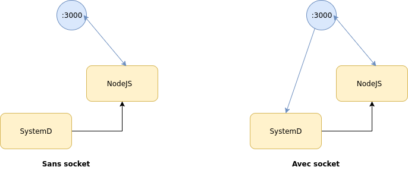

SysVinit vs. SystemD
La petite histoire des systèmes d'initialisation
Par
Paul Delafosse, Thibaut Strecker et Lucas Declercq
Le système d'initialisation
À quoi ça sert ?

Le système d'initialisation est le logiciel qui initialise votre système lors du démarrage :
- il charge les pilotes du matériel
- il active la connexion au réseau
- il lance divers services systèmes
- et enfin il charge l'environnement graphique qui vous permet d'utiliser votre ordinateur
Le système d'initialisation :
- C'est le premier processus démarré après le démarrage du kernel.
- Dans les faits, ce processus prend le PID 1 sur le système.
- Il est toujours lancé par le kernel de Linux, après les premières étapes de boot réalisées par le BIOS et le bootloader.
Ce processus doit toujours être actif. Si jamais PID 1 est interrompu on entre alors en kernel Panic !
Vous pouvez d'ailleurs essayer :
sudo kill -9 1Pourquoi ce processus est-il si vital ?
- Un processus est toujours créé par un autre, appelé son processus père.
- Exception faite du processus initial qui est le père de tous les autres !
Pour avoir un résumé de tout ce que fait le PID 1 au démarrage :
$ systemd-analyse plot > boostpid.svg Les roles d'un système d'initialisation :
- Il démarre le reste des processus nécessaires au lancement du système d'exploitation
- Il gère le cycle de vie des autres processus
- Il gère le nettoyage des processus orphelins (processus zombies)
- Il a aussi un rôle de monitoring
SLIDE DE TRANSITION VERS SYSVINIT
SysVinit
Un peu d'histoire ...
- Init fait référence à SysVInit, le système d’initialisation de SystemV, le premier système d’exploitation Unix commercial.
- SysV a connu 4 versions majeures depuis la première en 1983, dont la quatrième (SRV4), succés majeur, à été soutenu par les principaux vendeurs de systèmes Unix.
Init est donc un très vieux système !

On peut découper Init en deux composants principaux :
- I. Les runlevels
- II. Les scripts d'initialisation
I. Les Runlevels
- Un runlevel est un des modes dans lequel un système Unix s'exécute.
- Chaque runlevel possède un certain nombre de processus actifs ou stoppés.
- Une fois le kernel démarré, init lit le fichier /etc/inittab pour déterminer le comportement de chaque runlevel ainsi que le runlevel par défaut.
Il existe 8 runlevels :
| Runlevel | Mode | Actions |
|---|---|---|
| 0 | Halt | Éteint le système |
| 1 | Single-User Mode | Pas de réseau, de daemons ou d'autre utilisateur que root |
| 2 | Multi-User Mode | Ne configure pas le réseau ou les daemons |
(Suite)
| Runlevel | Mode | Actions |
|---|---|---|
| 3 | Multi-User Mode with Networking | Démarre le système normalement |
| 4 | Undefined | Pas utilisé |
| 5 | X11 | Comme le runlevel 3 + interface graphique |
| 6 | Reboot | Redémarre le système |
Comment démarrent nos applications ?
- Les applications démarrées par init ont leur script placé dans le dossier /etc/rc.d Dans ce dossier il y a un dossier pour chaque runlevel : rc0.d, rc1.d etc..
- Si le système démarre par défaut au niveau 3, il faut donc que le script de notre application soit présent dans le dossier rc3.d.
Gérer tous ces dossiers, fichiers et liens symboliques parait compliqué...
Rassurez vous, on peut simplifier !

Grâce à chkconfig on peut visualiser l'activation des scripts pour chaque runlevel :
root@host:~ # chkconfig --list
filelimits 0:off 1:off 2:on 3:on 4:on 5:on 6:off
syslog 0:off 1:off 2:on 3:on 4:on 5:on 6:off
gpm 0:off 1:off 2:on 3:on 4:on 5:on 6:off
cpanel 0:off 1:off 2:off 3:on 4:on 5:on 6:off
kudzu 0:off 1:off 2:off 3:on 4:on 5:on 6:off
ntpd 0:off 1:off 2:off 3:off 4:off 5:off 6:off
netfs 0:off 1:off 2:off 3:on 4:on 5:on 6:off
network 0:off 1:off 2:on 3:on 4:on 5:on 6:off
netplugd 0:off 1:off 2:off 3:off 4:off 5:off 6:off
rawdevices 0:off 1:off 2:off 3:on 4:on 5:on 6:off
ipchains 0:off 1:off 2:on 3:on 4:on 5:on 6:off
iptables 0:off 1:off 2:on 3:on 4:on 5:on 6:off
crond 0:off 1:off 2:on 3:on 4:on 5:on 6:off
anacron 0:off 1:off 2:on 3:on 4:on 5:on 6:off
cups 0:off 1:off 2:on 3:on 4:on 5:on 6:off
xfs 0:off 1:off 2:on 3:on 4:on 5:on 6:off
xinetd 0:off 1:off 2:off 3:on 4:on 5:on 6:off
httpd 0:off 1:off 2:off 3:on 4:off 5:on 6:off
Pour résumer, voici ce qui se passe quand on démarre Linux :
- Le BIOS ou le bootloader (lilo, grub, etc) charge le kernel, du disque vers la mémoire. Le fichier du kernel reste dans le dossier /boot, il n'est lu qu'à ce moment précis.
- En mémoire, le code du kernel s'exécute, et détecte divers éléments : disques, partitions, etc...
- Le kernel monte le système de fichier qui doit obligatoirement contenir certains dossiers : /etc, /bin, /lib...
- Immédiatement après, le kernel appelle la commande init (/sbin/init) et lui passe la main.
- La commande init lit le fichier /etc/inittab qui définit le runlevel du système, et les scripts système à exécuter.
- Ces scripts vont finir la mise en place des parties vitales du système (systèmes de fichier, SWAP, mémoire virtuelle...).
- Et enfin, init va lancer les scripts présents dans /etc/rc.d
II. Les scripts d'initialisations
Mais qu'est-ce qu'un script d'initialisation ?
C'est un script bash !
Voilà à quoi ça ressemble : on a un block de fonctions qui correspondent aux paramètres start et stop.
start() {
echo start
# commands to launch application
}
stop() {
echo stop
# commands to kill application
}
status() {
echo "running"
# commands to see the status of the application
}Et un switch/case pour gérer ces fonctions côté utilisateur :
case "$1" in
start)
start
;;
stop)
stop
;;
restart)
stop
start
;;
*)
echo "Usage: $0 {start|stop|restart|uninstall}"
esac
Le point de vue de Daniel et Daniel.
- Mais Daniel, c'est tout ???
- Et oui Daniel. C'est tout, on pourrait rajouter de la complexité
en gérant les PID files, les utilisateurs
et les logs mais le principe de base est là.
Si tu trouves ça simple je te conseille de jeter un oeil
au script d'initialisation de Gitlab.
Exemple : le script d'init de Gitlab (500 lignes)
#! /bin/sh
# GITLAB
# Maintainer: @randx
# Authors: rovanion.luckey@gmail.com, @randx
### BEGIN INIT INFO
# Provides: gitlab
# Required-Start: $local_fs $remote_fs $network $syslog redis-server
# Required-Stop: $local_fs $remote_fs $network $syslog
# Default-Start: 2 3 4 5
# Default-Stop: 0 1 6
# Short-Description: GitLab git repository management
# Description: GitLab git repository management
# chkconfig: - 85 14
### END INIT INFO
###
# DO NOT EDIT THIS FILE!
# This file will be overwritten on update.
# Instead add/change your variables in /etc/default/gitlab
# An example defaults file can be found in lib/support/init.d/gitlab.default.example
###
### Environment variables
RAILS_ENV="production"
# Script variable names should be lower-case not to conflict with
# internal /bin/sh variables such as PATH, EDITOR or SHELL.
app_user="git"
app_root="/home/$app_user/gitlab"
pid_path="$app_root/tmp/pids"
socket_path="$app_root/tmp/sockets"
rails_socket="$socket_path/gitlab.socket"
web_server_pid_path="$pid_path/unicorn.pid"
sidekiq_pid_path="$pid_path/sidekiq.pid"
mail_room_enabled=false
mail_room_pid_path="$pid_path/mail_room.pid"
gitlab_workhorse_dir=$(cd $app_root/../gitlab-workhorse 2> /dev/null && pwd)
gitlab_workhorse_pid_path="$pid_path/gitlab-workhorse.pid"
gitlab_workhorse_options="-listenUmask 0 -listenNetwork unix -listenAddr $socket_path/gitlab-workhorse.socket -authBackend http://127.0.0.1:8080 -authSocket $rails_socket -documentRoot $app_root/public"
gitlab_workhorse_log="$app_root/log/gitlab-workhorse.log"
gitlab_pages_enabled=false
gitlab_pages_dir=$(cd $app_root/../gitlab-pages 2> /dev/null && pwd)
gitlab_pages_pid_path="$pid_path/gitlab-pages.pid"
gitlab_pages_options="-pages-domain example.com -pages-root $app_root/shared/pages -listen-proxy 127.0.0.1:8090"
gitlab_pages_log="$app_root/log/gitlab-pages.log"
shell_path="/bin/bash"
gitaly_enabled=true
gitaly_dir=$(cd $app_root/../gitaly 2> /dev/null && pwd)
gitaly_pid_path="$pid_path/gitaly.pid"
gitaly_log="$app_root/log/gitaly.log"
# Read configuration variable file if it is present
test -f /etc/default/gitlab && . /etc/default/gitlab
# Switch to the app_user if it is not he/she who is running the script.
if [ `whoami` != "$app_user" ]; then
eval su - "$app_user" -c $(echo \")$shell_path -l -c \'$0 "$@"\'$(echo \"); exit;
fi
# Switch to the gitlab path, exit on failure.
if ! cd "$app_root" ; then
echo "Failed to cd into $app_root, exiting!"; exit 1
fi
### Init Script functions
## Gets the pids from the files
check_pids(){
if ! mkdir -p "$pid_path"; then
echo "Could not create the path $pid_path needed to store the pids."
exit 1
fi
# If there exists a file which should hold the value of the Unicorn pid: read it.
if [ -f "$web_server_pid_path" ]; then
wpid=$(cat "$web_server_pid_path")
else
wpid=0
fi
if [ -f "$sidekiq_pid_path" ]; then
spid=$(cat "$sidekiq_pid_path")
else
spid=0
fi
if [ -f "$gitlab_workhorse_pid_path" ]; then
hpid=$(cat "$gitlab_workhorse_pid_path")
else
hpid=0
fi
if [ "$mail_room_enabled" = true ]; then
if [ -f "$mail_room_pid_path" ]; then
mpid=$(cat "$mail_room_pid_path")
else
mpid=0
fi
fi
if [ "$gitlab_pages_enabled" = true ]; then
if [ -f "$gitlab_pages_pid_path" ]; then
gppid=$(cat "$gitlab_pages_pid_path")
else
gppid=0
fi
fi
if [ "$gitaly_enabled" = true ]; then
if [ -f "$gitaly_pid_path" ]; then
gapid=$(cat "$gitaly_pid_path")
else
gapid=0
fi
fi
}
## Called when we have started the two processes and are waiting for their pid files.
wait_for_pids(){
# We are sleeping a bit here mostly because sidekiq is slow at writing its pid
i=0;
while [ ! -f $web_server_pid_path ] || [ ! -f $sidekiq_pid_path ] || [ ! -f $gitlab_workhorse_pid_path ] || { [ "$mail_room_enabled" = true ] && [ ! -f $mail_room_pid_path ]; } || { [ "$gitlab_pages_enabled" = true ] && [ ! -f $gitlab_pages_pid_path ]; } || { [ "$gitaly_enabled" = true ] && [ ! -f $gitaly_pid_path ]; }; do
sleep 0.1;
i=$((i+1))
if [ $((i%10)) = 0 ]; then
echo -n "."
elif [ $((i)) = 301 ]; then
echo "Waited 30s for the processes to write their pids, something probably went wrong."
exit 1;
fi
done
echo
}
# We use the pids in so many parts of the script it makes sense to always check them.
# Only after start() is run should the pids change. Sidekiq sets its own pid.
check_pids
## Checks whether the different parts of the service are already running or not.
check_status(){
check_pids
# If the web server is running kill -0 $wpid returns true, or rather 0.
# Checks of *_status should only check for == 0 or != 0, never anything else.
if [ $wpid -ne 0 ]; then
kill -0 "$wpid" 2>/dev/null
web_status="$?"
else
web_status="-1"
fi
if [ $spid -ne 0 ]; then
kill -0 "$spid" 2>/dev/null
sidekiq_status="$?"
else
sidekiq_status="-1"
fi
if [ $hpid -ne 0 ]; then
kill -0 "$hpid" 2>/dev/null
gitlab_workhorse_status="$?"
else
gitlab_workhorse_status="-1"
fi
if [ "$mail_room_enabled" = true ]; then
if [ $mpid -ne 0 ]; then
kill -0 "$mpid" 2>/dev/null
mail_room_status="$?"
else
mail_room_status="-1"
fi
fi
if [ "$gitlab_pages_enabled" = true ]; then
if [ $gppid -ne 0 ]; then
kill -0 "$gppid" 2>/dev/null
gitlab_pages_status="$?"
else
gitlab_pages_status="-1"
fi
fi
if [ "$gitaly_enabled" = true ]; then
if [ $gapid -ne 0 ]; then
kill -0 "$gapid" 2>/dev/null
gitaly_status="$?"
else
gitaly_status="-1"
fi
fi
if [ $web_status = 0 ] && [ $sidekiq_status = 0 ] && [ $gitlab_workhorse_status = 0 ] && { [ "$mail_room_enabled" != true ] || [ $mail_room_status = 0 ]; } && { [ "$gitlab_pages_enabled" != true ] || [ $gitlab_pages_status = 0 ]; } && { [ "$gitaly_enabled" != true ] || [ $gitaly_status = 0 ]; }; then
gitlab_status=0
else
# http://refspecs.linuxbase.org/LSB_4.1.0/LSB-Core-generic/LSB-Core-generic/iniscrptact.html
# code 3 means 'program is not running'
gitlab_status=3
fi
}
## Check for stale pids and remove them if necessary.
check_stale_pids(){
check_status
# If there is a pid it is something else than 0, the service is running if
# *_status is == 0.
if [ "$wpid" != "0" ] && [ "$web_status" != "0" ]; then
echo "Removing stale Unicorn web server pid. This is most likely caused by the web server crashing the last time it ran."
if ! rm "$web_server_pid_path"; then
echo "Unable to remove stale pid, exiting."
exit 1
fi
fi
if [ "$spid" != "0" ] && [ "$sidekiq_status" != "0" ]; then
echo "Removing stale Sidekiq job dispatcher pid. This is most likely caused by Sidekiq crashing the last time it ran."
if ! rm "$sidekiq_pid_path"; then
echo "Unable to remove stale pid, exiting"
exit 1
fi
fi
if [ "$hpid" != "0" ] && [ "$gitlab_workhorse_status" != "0" ]; then
echo "Removing stale GitLab Workhorse pid. This is most likely caused by GitLab Workhorse crashing the last time it ran."
if ! rm "$gitlab_workhorse_pid_path"; then
echo "Unable to remove stale pid, exiting"
exit 1
fi
fi
if [ "$mail_room_enabled" = true ] && [ "$mpid" != "0" ] && [ "$mail_room_status" != "0" ]; then
echo "Removing stale MailRoom job dispatcher pid. This is most likely caused by MailRoom crashing the last time it ran."
if ! rm "$mail_room_pid_path"; then
echo "Unable to remove stale pid, exiting"
exit 1
fi
fi
if [ "$gitlab_pages_enabled" = true ] && [ "$gppid" != "0" ] && [ "$gitlab_pages_status" != "0" ]; then
echo "Removing stale GitLab Pages job dispatcher pid. This is most likely caused by GitLab Pages crashing the last time it ran."
if ! rm "$gitlab_pages_pid_path"; then
echo "Unable to remove stale pid, exiting"
exit 1
fi
fi
if [ "$gitaly_enabled" = true ] && [ "$gapid" != "0" ] && [ "$gitaly_status" != "0" ]; then
echo "Removing stale Gitaly pid. This is most likely caused by Gitaly crashing the last time it ran."
if ! rm "$gitaly_pid_path"; then
echo "Unable to remove stale pid, exiting"
exit 1
fi
fi
}
## If no parts of the service is running, bail out.
exit_if_not_running(){
check_stale_pids
if [ "$web_status" != "0" ] && [ "$sidekiq_status" != "0" ] && [ "$gitlab_workhorse_status" != "0" ] && { [ "$mail_room_enabled" != true ] || [ "$mail_room_status" != "0" ]; } && { [ "$gitlab_pages_enabled" != true ] || [ "$gitlab_pages_status" != "0" ]; } && { [ "$gitaly_enabled" != true ] || [ "$gitaly_status" != "0" ]; }; then
echo "GitLab is not running."
exit
fi
}
## Starts Unicorn and Sidekiq if they're not running.
start_gitlab() {
check_stale_pids
if [ "$web_status" != "0" ]; then
echo "Starting GitLab Unicorn"
fi
if [ "$sidekiq_status" != "0" ]; then
echo "Starting GitLab Sidekiq"
fi
if [ "$gitlab_workhorse_status" != "0" ]; then
echo "Starting GitLab Workhorse"
fi
if [ "$mail_room_enabled" = true ] && [ "$mail_room_status" != "0" ]; then
echo "Starting GitLab MailRoom"
fi
if [ "$gitlab_pages_enabled" = true ] && [ "$gitlab_pages_status" != "0" ]; then
echo "Starting GitLab Pages"
fi
if [ "$gitaly_enabled" = true ] && [ "$gitaly_status" != "0" ]; then
echo "Starting Gitaly"
fi
# Then check if the service is running. If it is: don't start again.
if [ "$web_status" = "0" ]; then
echo "The Unicorn web server already running with pid $wpid, not restarting."
else
# Remove old socket if it exists
rm -f "$rails_socket" 2>/dev/null
# Start the web server
RAILS_ENV=$RAILS_ENV bin/web start
fi
# If sidekiq is already running, don't start it again.
if [ "$sidekiq_status" = "0" ]; then
echo "The Sidekiq job dispatcher is already running with pid $spid, not restarting"
else
RAILS_ENV=$RAILS_ENV bin/background_jobs start &
fi
if [ "$gitlab_workhorse_status" = "0" ]; then
echo "The GitLab Workhorse is already running with pid $hpid, not restarting"
else
# No need to remove a socket, gitlab-workhorse does this itself.
# Because gitlab-workhorse has multiple executables we need to fix
# the PATH.
$app_root/bin/daemon_with_pidfile $gitlab_workhorse_pid_path \
/usr/bin/env PATH=$gitlab_workhorse_dir:$PATH \
gitlab-workhorse $gitlab_workhorse_options \
>> $gitlab_workhorse_log 2>&1 &
fi
if [ "$mail_room_enabled" = true ]; then
# If MailRoom is already running, don't start it again.
if [ "$mail_room_status" = "0" ]; then
echo "The MailRoom email processor is already running with pid $mpid, not restarting"
else
RAILS_ENV=$RAILS_ENV bin/mail_room start &
fi
fi
if [ "$gitlab_pages_enabled" = true ]; then
if [ "$gitlab_pages_status" = "0" ]; then
echo "The GitLab Pages is already running with pid $gppid, not restarting"
else
$app_root/bin/daemon_with_pidfile $gitlab_pages_pid_path \
$gitlab_pages_dir/gitlab-pages $gitlab_pages_options \
>> $gitlab_pages_log 2>&1 &
fi
fi
if [ "$gitaly_enabled" = true ]; then
if [ "$gitaly_status" = "0" ]; then
echo "Gitaly is already running with pid $gapid, not restarting"
else
$app_root/bin/daemon_with_pidfile $gitaly_pid_path \
$gitaly_dir/gitaly $gitaly_dir/config.toml >> $gitaly_log 2>&1 &
fi
fi
# Wait for the pids to be planted
wait_for_pids
# Finally check the status to tell wether or not GitLab is running
print_status
}
## Asks Unicorn, Sidekiq and MailRoom if they would be so kind as to stop, if not kills them.
stop_gitlab() {
exit_if_not_running
if [ "$web_status" = "0" ]; then
echo "Shutting down GitLab Unicorn"
RAILS_ENV=$RAILS_ENV bin/web stop
fi
if [ "$sidekiq_status" = "0" ]; then
echo "Shutting down GitLab Sidekiq"
RAILS_ENV=$RAILS_ENV bin/background_jobs stop
fi
if [ "$gitlab_workhorse_status" = "0" ]; then
echo "Shutting down GitLab Workhorse"
kill -- $(cat $gitlab_workhorse_pid_path)
fi
if [ "$mail_room_enabled" = true ] && [ "$mail_room_status" = "0" ]; then
echo "Shutting down GitLab MailRoom"
RAILS_ENV=$RAILS_ENV bin/mail_room stop
fi
if [ "$gitlab_pages_status" = "0" ]; then
echo "Shutting down gitlab-pages"
kill -- $(cat $gitlab_pages_pid_path)
fi
if [ "$gitaly_status" = "0" ]; then
echo "Shutting down Gitaly"
kill -- $(cat $gitaly_pid_path)
fi
# If something needs to be stopped, lets wait for it to stop. Never use SIGKILL in a script.
while [ "$web_status" = "0" ] || [ "$sidekiq_status" = "0" ] || [ "$gitlab_workhorse_status" = "0" ] || { [ "$mail_room_enabled" = true ] && [ "$mail_room_status" = "0" ]; } || { [ "$gitlab_pages_enabled" = true ] && [ "$gitlab_pages_status" = "0" ]; } || { [ "$gitaly_enabled" = true ] && [ "$gitaly_status" = "0" ]; }; do
sleep 1
check_status
printf "."
if [ "$web_status" != "0" ] && [ "$sidekiq_status" != "0" ] && [ "$gitlab_workhorse_status" != "0" ] && { [ "$mail_room_enabled" != true ] || [ "$mail_room_status" != "0" ]; } && { [ "$gitlab_pages_enabled" != true ] || [ "$gitlab_pages_status" != "0" ]; } && { [ "$gitaly_enabled" != true ] || [ "$gitaly_status" != "0" ]; }; then
printf "\n"
break
fi
done
sleep 1
# Cleaning up unused pids
rm "$web_server_pid_path" 2>/dev/null
# rm "$sidekiq_pid_path" 2>/dev/null # Sidekiq seems to be cleaning up its own pid.
rm -f "$gitlab_workhorse_pid_path"
if [ "$mail_room_enabled" = true ]; then
rm "$mail_room_pid_path" 2>/dev/null
fi
rm -f "$gitlab_pages_pid_path"
rm -f "$gitaly_pid_path"
print_status
}
## Prints the status of GitLab and its components.
print_status() {
check_status
if [ "$web_status" != "0" ] && [ "$sidekiq_status" != "0" ] && [ "$gitlab_workhorse_status" != "0" ] && { [ "$mail_room_enabled" != true ] || [ "$mail_room_status" != "0" ]; } && { [ "$gitlab_pages_enabled" != true ] || [ "$gitlab_pages_status" != "0" ]; } && { [ "$gitaly_enabled" != true ] || [ "$gitaly_status" != "0" ]; }; then
echo "GitLab is not running."
return
fi
if [ "$web_status" = "0" ]; then
echo "The GitLab Unicorn web server with pid $wpid is running."
else
printf "The GitLab Unicorn web server is \033[31mnot running\033[0m.\n"
fi
if [ "$sidekiq_status" = "0" ]; then
echo "The GitLab Sidekiq job dispatcher with pid $spid is running."
else
printf "The GitLab Sidekiq job dispatcher is \033[31mnot running\033[0m.\n"
fi
if [ "$gitlab_workhorse_status" = "0" ]; then
echo "The GitLab Workhorse with pid $hpid is running."
else
printf "The GitLab Workhorse is \033[31mnot running\033[0m.\n"
fi
if [ "$mail_room_enabled" = true ]; then
if [ "$mail_room_status" = "0" ]; then
echo "The GitLab MailRoom email processor with pid $mpid is running."
else
printf "The GitLab MailRoom email processor is \033[31mnot running\033[0m.\n"
fi
fi
if [ "$gitlab_pages_enabled" = true ]; then
if [ "$gitlab_pages_status" = "0" ]; then
echo "The GitLab Pages with pid $gppid is running."
else
printf "The GitLab Pages is \033[31mnot running\033[0m.\n"
fi
fi
if [ "$gitaly_enabled" = true ]; then
if [ "$gitaly_status" = "0" ]; then
echo "Gitaly with pid $gapid is running."
else
printf "Gitaly is \033[31mnot running\033[0m.\n"
fi
fi
if [ "$web_status" = "0" ] && [ "$sidekiq_status" = "0" ] && [ "$gitlab_workhorse_status" = "0" ] && { [ "$mail_room_enabled" != true ] || [ "$mail_room_status" = "0" ]; } && { [ "$gitlab_pages_enabled" != true ] || [ "$gitlab_pages_status" = "0" ]; } && { [ "$gitaly_enabled" != true ] || [ "$gitaly_status" = "0" ]; }; then
printf "GitLab and all its components are \033[32mup and running\033[0m.\n"
fi
}
## Tells unicorn to reload its config and Sidekiq to restart
reload_gitlab(){
exit_if_not_running
if [ "$wpid" = "0" ];then
echo "The GitLab Unicorn Web server is not running thus its configuration can't be reloaded."
exit 1
fi
printf "Reloading GitLab Unicorn configuration... "
RAILS_ENV=$RAILS_ENV bin/web reload
echo "Done."
echo "Restarting GitLab Sidekiq since it isn't capable of reloading its config..."
RAILS_ENV=$RAILS_ENV bin/background_jobs restart
if [ "$mail_room_enabled" != true ]; then
echo "Restarting GitLab MailRoom since it isn't capable of reloading its config..."
RAILS_ENV=$RAILS_ENV bin/mail_room restart
fi
wait_for_pids
print_status
}
## Restarts Sidekiq and Unicorn.
restart_gitlab(){
check_status
if [ "$web_status" = "0" ] || [ "$sidekiq_status" = "0" ] || [ "$gitlab_workhorse" = "0" ] || { [ "$mail_room_enabled" = true ] && [ "$mail_room_status" = "0" ]; } || { [ "$gitlab_pages_enabled" = true ] && [ "$gitlab_pages_status" = "0" ]; } || { [ "$gitaly_enabled" = true ] && [ "$gitaly_status" = "0" ]; }; then
stop_gitlab
fi
start_gitlab
}
### Finally the input handling.
case "$1" in
start)
start_gitlab
;;
stop)
stop_gitlab
;;
restart)
restart_gitlab
;;
reload|force-reload)
reload_gitlab
;;
status)
print_status
exit $gitlab_status
;;
*)
echo "Usage: service gitlab {start|stop|restart|reload|status}"
exit 1
;;
esac
exit
On peut déja voir plusieurs problèmes potentiels :
- La complexité :
- un très gros projet (comme Gitlab) avec beaucoup de dépendances et de modules entrainera un script d'init très complexe et indigeste.
- L'absence de norme :
- chaque développeur à sa manière de programmer. Reprendre le script d'un autre développeur entrainera une phase de compréhension plus ou moins longue.
Autre problème majeur d'Init :
Il démarre les processus les uns après les autres, en attendant que le lancement soit terminé avant de passer au suivant.
Quand le lancement d'un processus est ralenti (par exemple à cause d'un disque dur ancien et lent) cela entraine un très lent temps de démarrage du système d'exploitation.
On peut toutefois améliorer ce temps de démarrage en utilisant un SSD comme disque dur.SLIDE DE TRANSITION VERS SYSTEMD
SystemD

Définition :
- SystemD est un système d’initialisation et un daemon qui a été spécifiquement conçu pour le noyau Linux comme alternative à System V. Il a été écrit en C.
- Il a pour but d'offrir un meilleur cadre pour la gestion des dépendances entre services, de permettre le chargement en parallèle des services au démarrage, et de réduire les appels aux scripts shell.
Une naissance mouvementée :
SystemD a été créé en 2010 par Lennart Poettering et Kay Sievers, et a été à l’origine d’intenses débats au sein de la communauté Linux.
"I don't actually have any particularly strong opinions on systemd
itself. I've had issues with some of the core developers that
I think are much too cavalier about bugs and compatibility, and
I think some of the design details are insane (I dislike the
binary logs, for example), but those are details, not big issues."
Linus Torvalds
Le principal reproche émis à l'encontre de SystemD est qu'il enfreint la philosophie Unix ::
"Write programs that do one thing and do it well. Write programs
to work together. Write programs to handle text streams, because
that isa universal interface."
Douglas McLlroy
Bien que les projets open source soient habitués aux discussions et débats enflammés, celui-ci a atteint des sommets.
Un des évènements les plus marquants de cette véritable guerre est l'intense débat mené entre octobre 2013 et février 2014 au sein de la communauté Debian, ayant pour objet le choix de l'init par défaut à implémenter dans la version 8 "Jessie" de Debian.
SystemD sera finalement choisi, ce qui aura pour conséquence le départs de plusieurs contributeurs vétérans , qui réaliseront un fork de Debian appelé Devuan.
Les particularités de systemd :
- I. Le principe KISS
- II. Un système orienté configuration
- III. La parallélisation
- IV. Les "control groups"
- V. "The Journal"
- VI. Les Timers
- VII. La galaxie SystemD
I. Le principe KISS
"Keep It Simple Stupid"Stupide ? Au contraire !
- Le principe KISS est habituellement associé à des systemes qui peuvent paraitre stupide à cause de leur conception simple.
- Ce principe est une règle de conception qui établie qu'un système est plus performant quand il a un design simple plutôt que complexe.
- Ce principe a été inventé dans les années 60 par Kelly Johnson, un ingénieur qui travaillait chez Lockheed Martin.
"Everything should be made as simple as possible, but not simpler.
This means that one should simplify the design of a product and
success is achieved when a design is at its maximum simplicity."
Albert Einstein
II. Un système orienté Configuration
- A l'inverse de SysV, SystemD implémente de nombreux outils pour décourager
l'utisation de script de lancement.
- Dans la pratique, un service géré par SystemD sera généralement configuré par un fichier d'une dizaine de lignes.
#####################################################
#
# GitLab version : 5.x - 7.x
# Contributors : davispuh, mtorromeo, axilleas, boeserwolf91, Stefan Tatschner (rumpelsepp)
# Downloaded from : https://gitlab.com/gitlab-org/gitlab-recipes/tree/master/init/systemd
#
####################################################
[Unit]
Description=GitLab Unicorn Server
Requires=redis.service
Wants=mysqld.service postgresql.service
After=redis.service mysqld.service postgresql.service
[Service]
User=git
WorkingDirectory=/home/git/gitlab
Environment=RAILS_ENV=production
SyslogIdentifier=gitlab-unicorn
PIDFile=/home/git/gitlab/tmp/pids/unicorn.pid
ExecStart=/usr/bin/bundle exec "unicorn_rails -D -c /home/git/gitlab/config/unicorn.rb -E production"
[Install]
WantedBy=multi-user.targetIII. La Parallélisation
Un des gros avantage de systemD sur init, c'est sa capacité à lancer des processus en parallèle via des sockets et D-bus.
Socket et D-bus sont deux ensembles normalisés de fonctions qui permettent au processus de parager des données et d'échanger des messages
IV. Contrôle tes logs!
- Dans systemd, les logs sont associés à un groupe afin de réduire les chances de corruption lors d'un piratage.
- Ils sont portables, et l'outil comporte une gestion de saturation de l'espace.
- Tout service géré par systemd est automatiquement logué dans la base de donnée de journald, à laquelle on accède via la commande journalctl.
V. Les Control Groups
- Systemd utilise le module cgroup du kernel linux pour organiser les processus.
- Il permet de contrôler et de surveiller l'usage des ressources physiques du système pour un ensemble de PID.
- Par exemple, les cgroups permettent de limiter l'usage mémoire pour un conteneur ou une VM.
- Les ressources physiques sont allouées à des groupes de contrôle : blkio, cpu, devices, memory...etc. (cf. Documentation de Red Hat)
$ ps xawf -eo pid,user,cgroup,args
VI. Les Timers
- Un Timer est un fichier (se terminant par .timer) permettant de contrôler un service comme un fichier de configuration systemd classique
- Il permet de déclencher un service à un moment précis dans le temps
Principe général :
C'est un fichier spécifique à systemd, qui est obligatoirement associé à un service existant.
Par défaut, un timer est associé au service ayant le même nom que lui.
Ex : foo.timer est associé a foo.service.
Les timers sont divisés en deux catégories :
- Les timers monotones (monotonic timer), qui s'activent après un temps donné. Ils s'arrêtent si le système est arrêté.
- Les timers de type temps-réel (realtime timer), qui s'activent à un instant donné, comme le font les cronjobs.
Exemple d'un timer monotone
[Unit]
Description=Run foo weekly and on boot
[Timer]
OnBootSec=15min
OnUnitActiveSec=1w
[Install]
WantedBy=timers.targetIci, le timer se lance 15 minutes après le démarrage du système, ainsi que toutes les semaines tant que le système est actif.
Exemple d'un timer type temps réel.
[Unit]
Description=Run foo weekly
[Timer]
OnCalendar=weekly
Persistent=true
[Install]
WantedBy=timers.targetLe timer se lance chaque lundi à minuit. Quand il est activé, il déclenche immédiatemment le service si ce dernier a manqué le dernier démarrage (par exemple si le système était éteint).
Les timers en remplacement de CRON
Les timers se posent en alternative solide à CRON, les bénéfices sont multiples :
- Les jobs peuvent être simplement lancés indépendement de leur timers, facilitant la maintenance.
- Chaque job peut être configuré pour fonctionner dans un environnement spécifique.
- Ils peuvent être liés à des cgroups.
- Ils peuvent être liés à d'autres units de systemd.
- Les jobs sont logués dans le journal de systemd.
VII. SystemD Galaxy
systemd-bood, udev, networkd, logind, timedated
TODO
Et maintenant...
Travaux Pratiques :
Création d'un service pour une application node js
Récupération du code et des dépendances
- Installer git, curl, nodejs, npm et mongodb :
sudo apt-get install npm nodejs mongodb curl git
- Cloner le repository git du TP :
git clone https://github.com/oknozor/awesome-api
sudo apt-get install npm nodejs mongodb curl gitgit clone https://github.com/oknozor/awesome-apiLancement de l'application
- Aller dans le répertoire du projet
cd awesome-api - Installer les dépendances de l'application :
npm install - Lancer l'application :
nodejs server.js
On vérifie que tout s'est bien passé
-
On fait un appel à l'API :
curl -X GET localhost:3000 -
Normalement la réponse s'affiche comme suit :
okno@FRL- ~ % curl -X GET localhost:3000 {"message":"Welcome to Greatest Hero of all time application. Browse your hero collection add more heroes."}%
Et systemd dans tout ça ?
- Lancer une application à la main ce n'est pas pratique ! Et si on ferme le terminal l'application s'arrêtera...
- Maintenant que notre service est opérationnel on va donc voir comment le lancer avec systemd.
- Comme on l'a vu dans la présentation systemd gère les processus avec des fichiers de configuration.
Pour commencer on va faire une configuration basique :
-
Récupérer le chemin de l'application :
$ pwd -
Récupérer le chemin de nodejs :
$ which nodejs
-
Éditer le fichier de configuration :
$ cd systemd && vim awesome-api.service -
Compléter les trous avec les informations récupérées à l'étape précedente :
[Service] ExecStart= // ici on va placer la commande à executer StandardOutput=syslog // on redirige les log dans "The journal" SyslogIdentifier= // un identifiant pour rechercher les logs dans le journal [Install] WantedBy=multi-user.target // dépendance à la target multi-user
Vous avez terminé?
Voilà à quoi ça ressemble chez nous :
[Service]
ExecStart=/usr/bin/node /home/okno/public_html/express-api/server.js
StandardOutput=syslog
SyslogIdentifier=awesome-api
[Install]
WantedBy=multi-user.targetCopie du fichier de configuration et lancement de la base de données :
- On va copier notre fichier de configuration dans le path de systemd :
$ sudo cp maconfig /etc/systemd/system/awesome-api.service -
Lancement de mongodb (via systemd) :
$ sudo systemctl mongodb.service
Vous êtes prêt à lancer votre premier service avec systemd?
La joie vous inonde?
$ sudo systemctl start awesome-api.serviceVous pouvez maintenant faire un appel sur l'api!
Les dépendances
C'est pas mal !
Mais si mongodb n'est pas disponible quand on lance le service voila ce qui arrive :
$ sudo systemctl stop mongodb.service
$ sudo systemctl restart awesome-api.service
$ sudo systemctl status awesome-api.service
Feb 10 12:56:02 FRL- systemd[1]: Started awesome-api.service.
Feb 10 12:56:03 FRL- awesome-api[19555]:
Server is listening on port 3000
Feb 10 12:56:03 FRL- awesome-api[19555]:
Could not connect to the database. Exiting now...
Pour règler le problème, rien de plus simple :
On va modifier la configuration de notre service :
[Unit]
Description=My Awesome API // Une description du service pour le fun
Wants=mongodb.service // Ici on ajoute la dépendance à mongo
[Service]
ExecStart=/usr/bin/node /home/okno/public_html/express-api/server.js
Restart=always
StandardOutput=syslog
SyslogIdentifier=heroes-api
[Install]
WantedBy=multi-user.targetEt voilà le travail ! On va pouvoir tester :
- On recharge la configuration :
$ sudo systemctl daemon-reload - On arrête mongodb :
$ sudo systemctl stop mongodb - On lance l'application :
$ sudo systemctl start awesome-api.service - On teste l'API :
$ curl -X GET localhost:3000/heroes
Socket d'activation
Le socket d'activation va nous permettre de lancer automatiquement le service à chaque fois qu'on fait un appel sur le port 3000.
-
On se place dans le dossier de systemd :
$ cd /etc/systemd/system/ -
On édite le fichier de configuration pour le socket :
$ vim awesome-api.socket - Dans lequel on insert les lignes suivantes :
[Socket] ListenStream=3000 [Install] WantedBy=sockets.target
On va éditer le service pour qu'il ne redémarre plus automatiquement :
[Unit]
Description= My awesome API
Wants= mongodb.service
// On a supprimé la ligne Restart=always
[Service]
ExecStart=/usr/bin/node /home/okno/public_html/express-api/server.js
StandardOutput=syslog
SyslogIdentifier=awesome-api-socket
[Install]
WantedBy=multi-user.targetIl va maintenant être activé sur demande par le socket.
-
On se replace dans le path du projet git puis on change de branche :
$ git checkout socket $ npm install -
On stoppe tous les services et on recharge la configuration :
$ sudo systemctl stop mongodb $ sudo systemctl stop awesome-api.service $ sudo systemctl daemon-reload -
En avant pour le socket!
$ sudo systemctl start awesome-api.socket